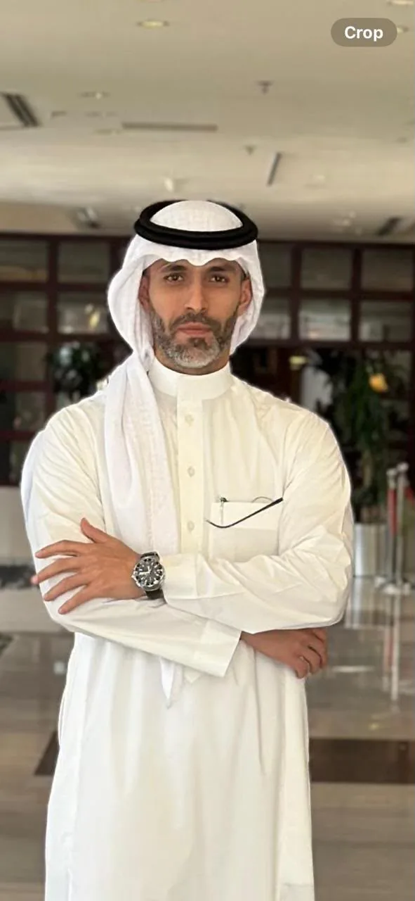
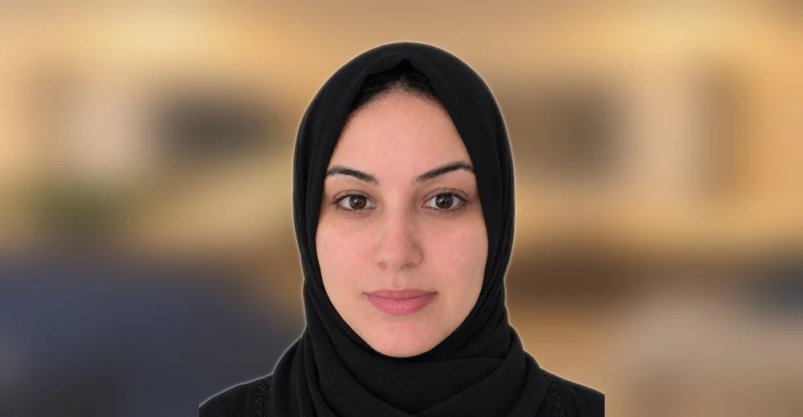

بناء أنظمة مؤسسية أقوى.
مساعدة المدارس على تعزيز الجودة والجاهزية للاعتماد والمناهج والتحسين من خلال أنظمة قائمة على الأدلة تستطيع القيادة استخدامها واستدامتها.
الجودة المؤسسية · الاعتماد · المناهج · تحسين المدارس
فالورن للخدمات التعليمية شركة استشارات تعليمية ونشر مسجلة في المملكة المتحدة، وتعمل مع المدارس والمؤسسات التعليمية في المملكة العربية السعودية ودول مجلس التعاون الخليجي والأسواق الدولية. ويجمع فريقها عقوداً من الخبرة المشتركة في التعليم والقيادة المدرسية وتطوير المناهج والجودة المؤسسية والنشر التعليمي.
مساعدة المدارس على تعزيز الجودة والجاهزية للاعتماد والمناهج والتحسين من خلال أنظمة قائمة على الأدلة تستطيع القيادة استخدامها واستدامتها.
أن تحقق مدارس السعودية والخليج المعايير الدولية من خلال أنظمة صارمة وملائمة للسياق المحلي وقابلة للاستدامة.
يقود مستشارو وخبراء فالورن العمل مباشرة، مع الاستفادة من شبكة أوسع من خبراء التعليم والمتخصصين الفنيين في دول الخليج. ويُشكَّل فريق كل مشروع وفق احتياجات المدرسة تحديداً، مع إشراك خبرات إضافية في الاعتماد والمناهج والحوكمة والعمليات والبرامج متعددة اللغات والتعلم المهني وغيرها من المجالات التخصصية عند الحاجة.
أوال يوسف تربوي في المقام الأول، وقائد تعليمي ومستشار أكاديمي متخصص في منطقة الشرق الأوسط وشمال أفريقيا، ويتمتع بخبرة تتجاوز عقداً في التعليم السعودي وأنظمة المدارس الدولية. يربط عمله بين الجودة المؤسسية والجاهزية للاعتماد وتطوير المناهج والتقويم والنشر التعليمي. ويجمع بين خبرة الصف الدراسي والمنظور القيادي والخبرة العملية في ترجمة الأطر الدولية إلى أنظمة مترابطة تستطيع مدارس الخليج تطبيقها واستدامتها.
مباشر: auwal.yusuf@vallorne-edu.comقائد تربوي حاصل على درجة الدكتوراه، وله خبرة واسعة في القيادة المدرسية في الشرق الأوسط وعمق تخصصي في الجودة المؤسسية وتطوير المناهج وبرامج التعليم الفرنسي. ويربط منظوره الاستشاري بين قرارات القيادة المدرسية وتطبيق المناهج والتحسين المؤسسي المستدام.
قائدة تربوية ذات خبرة في التعلم المهني وتخطيط المناهج وبيئات المدارس الدولية، مع خبرة خاصة في الاستراتيجية الأكاديمية في دول الخليج وبرامج تعليم اللغة الصينية. ويربط عملها بين تخطيط المناهج واحتياجات التطوير المهني اليومية للمعلمين، بما يساعد المدارس على مواءمة متطلبات البرامج مع الممارسات الصفية.
مؤسس مدرسة دولية وقائد تربوي، يمتلك أكثر من عقد من الخبرة في التدريس وقيادة الأقسام في المملكة المتحدة والمملكة العربية السعودية. وبصفته مؤسساً ومالكاً لمدرسة دولية، يمتلك خبرة مباشرة في تشغيل المدارس وقيادة المناهج والتطوير المؤسسي والاستعداد لبرامج IB.

لدى رامي خلفية في إدارة الأعمال وخبرة في الاستثمار والتأمين والبيئات المؤسسية. ويضيف منظوراً تجارياً وتشغيلياً إلى الاستراتيجية المؤسسية والتطوير التنظيمي والوعي بالمخاطر وصنع القرار القيادي.

متخصصة تربوية تمتلك خبرة تمتد لعقود في المناهج والتعليم في مرحلتي الطفولة المبكرة والصفوف الابتدائية في المملكة العربية السعودية. تشمل خبرتها النشر التعليمي والتعلم المهني. وتتميز بقدرتها على تحويل مواد المناهج إلى خبرات تعلم عملية وملائمة عمرياً للمدارس والمعلمين.